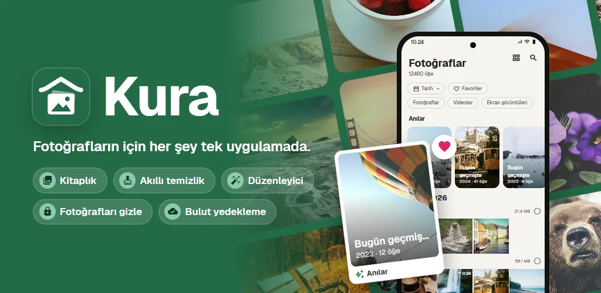
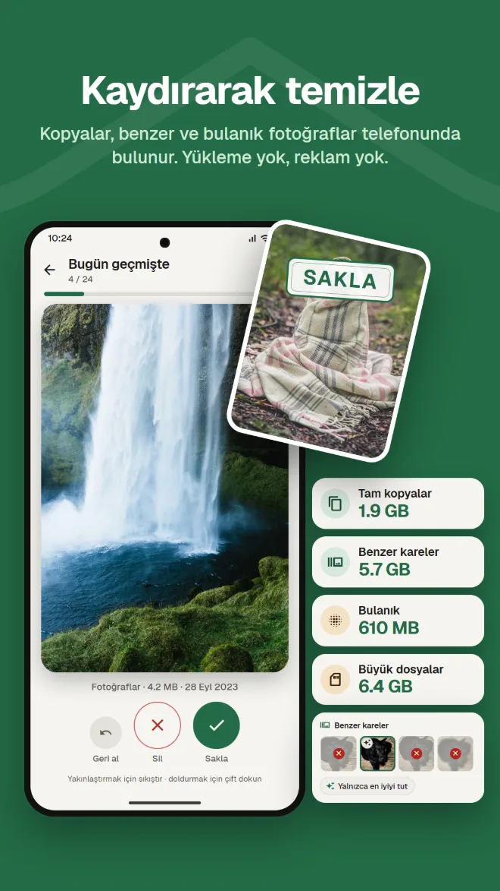
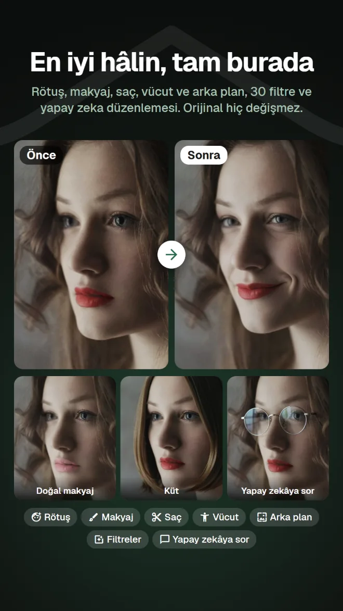
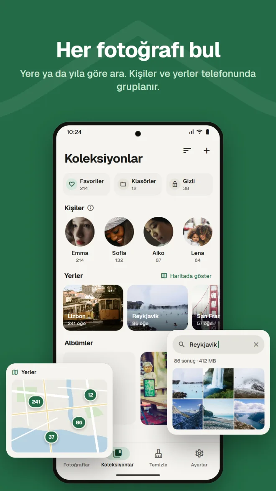
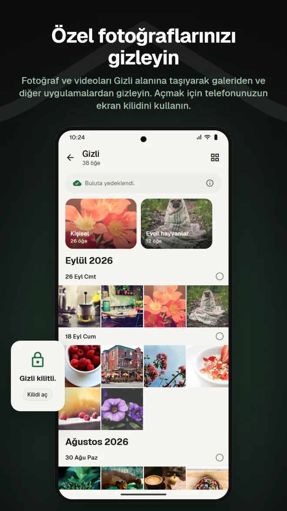
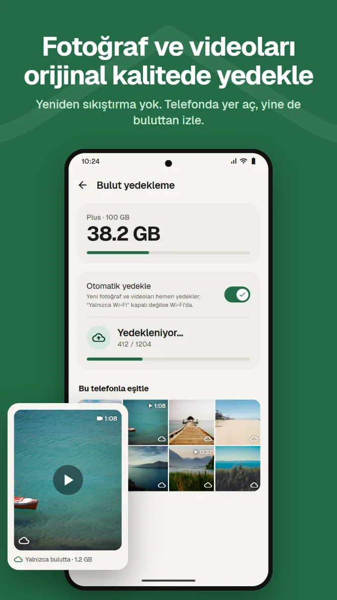
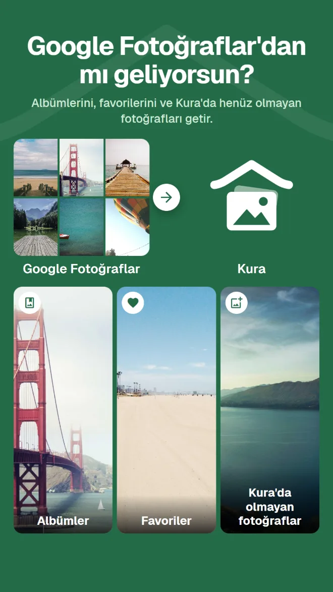

İçeriğe göre ara
Fotoğrafları yere, içinde ne olduğuna veya resimdeki yazıya göre bul.
Galeri, temizlik, yapay zekayla düzenleme, özel alan, yedekleme ve Google Fotoğraflar'dan taşıma. Kura ile her biri için ayrı bir uygulamaya gerek kalmaz.
Android 11 veya üstü · Göz atmak, ayıklamak ve silmek ücretsiz · Google ile oturum aç

Bakmak için bir galeri, yer açmak için bir temizleyici, düzenlemek için başka bir uygulama, yedeklemek için başka bir servis. Her geçişte aynı fotoğrafı yeniden bulman gerekiyor.
Kura hepsini tek bir kitaplıkta yapar.
Aynı fotoğrafları aynı yerde gör, temizle, düzenle ve yedekle.
Kitaplıktan temizliğe, düzenlemeye, taşımaya ve yedeklemeye kadar.
Kura, telefonundaki tam kopyaları, benzer fotoğrafları, bulanık kareleri ve büyük dosyaları bulur. Saklamak için sağa, çöpe atmak için sola kaydır ve ne kadar yer açabileceğini hemen gör.

Rötuş, şekil, makyaj, saç ve arka plan; ayrıca 30 filtre, ayarlar ve kırpma. Yemekleri iştah açıcı gösteren filtreler ve tüm vücut için araçlar da var. Her zaman kopya kaydedilir, orijinal olduğu gibi kalır.

Tarihe göre bir ızgara ve geçmiş yıllarda aynı günün anıları. Yere, fotoğrafta ne olduğuna veya içindeki yazıya göre ara; yüzler telefonunda kişi kişi gruplanır.

Fotoğraf ve videoları Gizli alanına taşıyarak galeriden ve diğer uygulamalardan gizle. Açmak için telefonunun ekran kilidini kullan.

Fotoğraf ve videoları yeniden sıkıştırmadan yedekle. Yer açmak için yedeklenen kopyaları telefondan kaldır; buluttan görüntülenmeye devam eder.

Google Takeout .zip dosyanı uygulamadan veya web uygulamasından göndermen yeterli. Kura albümlerini, favorilerini ve henüz kendisinde olmayan fotoğrafları getirir. Kura'nın sunucusu dosyayı arka planda açar, böylece uygulamayı ve tarayıcıyı kapatabilirsin.

Kura bulutundaki fotoğrafları web uygulamasında da tıpkı uygulamadaki gibi görebilir, organize edebilir, temizleyebilir, düzenleyebilir, paylaşabilir ve yükleyebilirsin. Favoriler uygulamayla eşitlenir.
Web uygulamasını açGoogle ile oturum aç · İngilizce ve Japonca
Her gün kullandığın bir galeriden beklediğin her şey.
Fotoğrafları yere, içinde ne olduğuna veya resimdeki yazıya göre bul.
Yüzler telefonunda kişi kişi gruplanır, fotoğrafların haritada görünür.
Geçmiş yıllarda aynı gün çekilen fotoğraflar, kitaplığının en üstünde.
Parlaklık ve renk ayarları, kırpma ve fırça, ayrıca yemek filtreleri.
Süre sınırı ve şifre ekle, uygulaması olmayan kişilere gönder.
Her açılışta ekran kilidinle onayla. İstersen Gizli'yi de saklayabilirsin.
Yükle, fotoğrafların zaten düzenlenmiş olarak karşına çıksın.
Google Play'den indir (Android 11 veya üstü)
Tüm kitaplığını yüklemek için “Tümüne izin ver”i seç
Google hesabınla oturum aç
Hemen ayıkla; yedeklemeyi ihtiyaç duyduğunda ekle
Reklam yok. Yalnızca bulutu kullandığında ödersin.
Telefonundaki her şey
Google Play üzerinden aylık ödeme. İstediğin zaman iptal et
Google Play fiyatları yerel para biriminde gösterir.
Fotoğraflar yalnızca onları açıkça bir yere gönderen bir şey yaptığında telefonundan çıkar.
Kopya, bulanıklık, yüz, nesne ve yazı algılama telefonunda çalışır. Ayıklamak için hiçbir fotoğraf yüklenmez.
Android her dosyayı silmeden önce sana sorar; çöpe atılan fotoğraflar sen çöp kutusunu boşaltana kadar bekler.
Oturum açtığında sunucumuz yalnızca Google hesabının kimliğini saklar. Adın ve e-posta adresin asla gönderilmez.
Yapay zeka düzenlemeleri yalnızca yüzün çevresindeki alanı gönderir; ne fotoğraf ne de sonuç sunucuda saklanır.
Reklamsız · Göz atmak, ayıklamak ve silmek ücretsiz